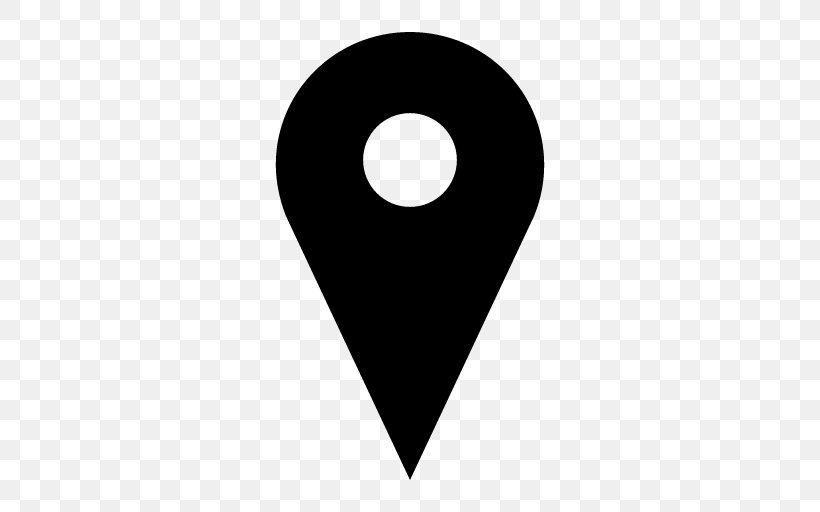

Mateus Alves Viegas
Perfil
Estudante de tecnologia apaixonado por resolver problemas complexos através de código. Tenho grande interesse no desenvolvimento de aplicações web e na construção de interfaces acessíveis e amigáveis para o usuário. Busco sempre aprender novas ferramentas e boas práticas de engenharia de software.
Atualmente, dedico meu tempo livre a projetos pessoais e maratonas de programação. Sou comunicativo, gosto de trabalhar em equipe e acredito que a tecnologia é a melhor ferramenta para transformar a sociedade de forma positiva.
Principais Competências
- Programador C#
- Desenvolvimento Front-End
- Administração de Banco de Dados
- Análise de Requisitos
- Gestão de Projetos Ágeis
Formação Acadêmica
Graduação em Ciência da Computação pela Universidade Federal de Uberlândia (Previsão de Conclusão: 2028)
Experiência Profissional
- Museu da Computação (2025 - Presente)
- Empresa Júnior ASCII - Soluções em Tecnologia (2025 - Presente)
Contato

João Naves de Ávila, Santa Mônica, Uberlândia